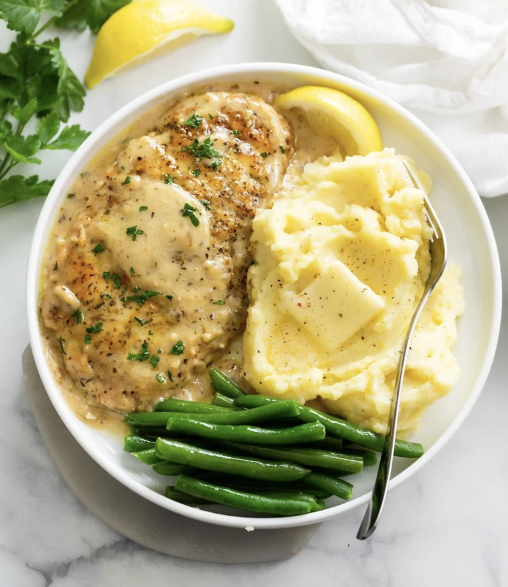

White Wine Chicken Delish

Delicious Chicken in White Wine Sauce!
This fantastic recipe combines the versatility of chicken with the flavor of white wine. Together with some potatos and veggies, this dish will have you saying, "Mmmmmm, that's delish!"
Ingredients
- 1/4 cup canola oil
- 3-4 boneless, skinless chicken breasts
- Seasoned salt, pepper, garlic powder, and onion powder to taste
- 1 tbsp unsalted butter
- 1 large yellow onion (diced)
- 3 garlic cloves (minced)
- 1 cup dry white wine
- 1 tsp dried thyme
- 1/2 cup heavy cream
- Parsley (garnish)
Steps
- Heat 1/4 cup canola oil in a pan over medium heat until it simmers (about 2-3 minutes)
- Season chicken with seasoned salt, pepper, garlic powder, and onion powder
- Add chicken to the pan and cook until golden brown (DO NOT move it around)
- Flip chicken over and cook again until golden brown or cooked through
- Remove the chicken and set aside
- DO NOT empty the pan
- Add 1 tbsp of butter to the pan and melt over medium-high heat
- Add diced onion and cook for 3 minutes or until softened
- Stir in garlic (minced), salt, and pepper and cook for 30 seconds or until fragrant
- Add white wine and bring to a simmer, scraping the bottom of the pan, and cook until until reduced
- Stir in thyme and heavy cream
- Reduce heat and slowly bring to a boil
- Place chicken back into the pan and leave to simmer and thicken for about 4 minutes
- Remove from heat
- Garnish with parsley (or preferred garnish)